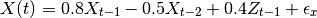
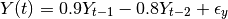
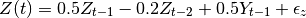
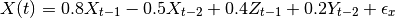
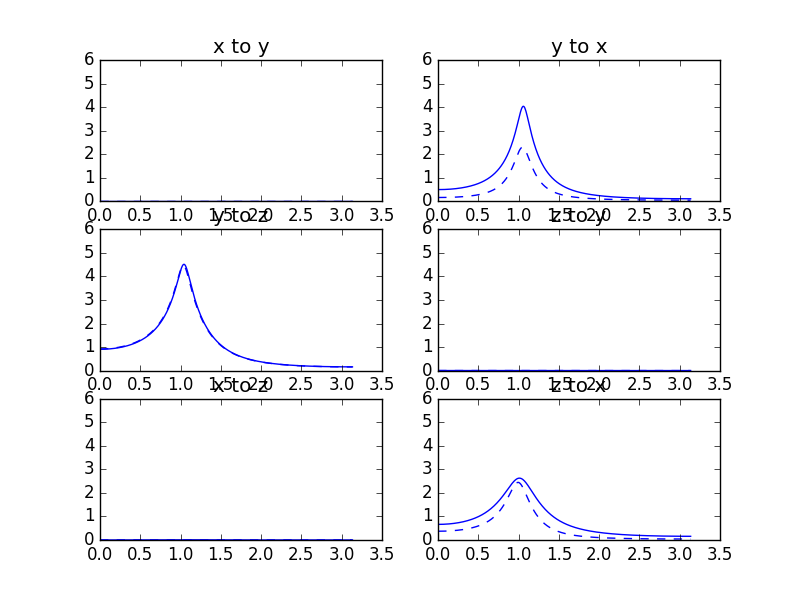

Mulitvariate auto-regressive modeling - 3 variables¶
This example is an extension of the example presented here: Mulitvariate auto-regressive modeling. Here, instead of 2 variables and the mutual influences between them, we map out the mutual interactions between three variables. This example follows closely an example provided in the paper by Ding, Chen and Bressler (2006) [Ding2006].
Start with the necessary imports:
import numpy as np
import matplotlib.pyplot as pp
import nitime.algorithms as alg
import nitime.utils as utils
Set the random seed:
np.random.seed(1981)
simulate two multivariate autoregressive systems.
The first is defined by the following equations:



cov = np.diag([0.3, 1.0, 0.2])
a1 = -np.array([[0.8, 0.0, 0.4],
[0.0, 0.9, 0.0],
[0.0, 0.5, 0.5]])
The second is defined by the following equations:


a2 = -np.array([[-0.5, 0.0, 0.0],
[0.0, -0.8, 0.0],
[0.0, 0.0, -0.2]])
a = np.array([a1.copy(), a2.copy()])
Add some feedback from Y to X at 2 lags:
a2[0, 1] = -0.2
b = np.array([a1.copy(), a2.copy()])
def extract_ij(i, j, m):
m_ij_rows = m[[i, j]]
return m_ij_rows[:, [i, j]]
We calculate the transfer function based on the coefficients:
w, Haw = alg.transfer_function_xy(a)
w, Hbw = alg.transfer_function_xy(b)
Generate 500 sets of 100 points
N = 500
L = 100
Generate the instances of the time-series based on the coefficients:
za = np.empty((N, 3, L))
zb = np.empty((N, 3, L))
ea = np.empty((N, 3, L))
eb = np.empty((N, 3, L))
for i in range(N):
za[i], ea[i] = utils.generate_mar(a, cov, L)
zb[i], eb[i] = utils.generate_mar(b, cov, L)
Try to estimate the 2nd order (m)AR coefficients– Average together N estimates of auto-covariance at lags k=0,1,2
Raxx = np.empty((N, 3, 3, 3))
Rbxx = np.empty((N, 3, 3, 3))
for i in range(N):
Raxx[i] = utils.autocov_vector(za[i], nlags=3)
Rbxx[i] = utils.autocov_vector(zb[i], nlags=3)
Average trials together to find autocovariance estimate, and extract pairwise components from the ac sequence:
Raxx = Raxx.mean(axis=0)
xyRa = extract_ij(0, 1, Raxx)
xzRa = extract_ij(0, 2, Raxx)
yzRa = extract_ij(1, 2, Raxx)
Rbxx = Rbxx.mean(axis=0)
xyRb = extract_ij(0, 1, Rbxx)
xzRb = extract_ij(0, 2, Rbxx)
yzRb = extract_ij(1, 2, Rbxx)
Now estimate mAR coefficients and covariance from the full and pairwise relationships:
Raxx = Raxx.transpose(2, 0, 1)
a_est, cov_est1 = alg.lwr_recursion(Raxx)
a_xy_est, cov_xy_est1 = alg.lwr_recursion(xyRa.transpose(2, 0, 1))
a_xz_est, cov_xz_est1 = alg.lwr_recursion(xzRa.transpose(2, 0, 1))
a_yz_est, cov_yz_est1 = alg.lwr_recursion(yzRa.transpose(2, 0, 1))
Rbxx = Rbxx.transpose(2, 0, 1)
b_est, cov_est2 = alg.lwr_recursion(Rbxx)
b_xy_est, cov_xy_est2 = alg.lwr_recursion(xyRb.transpose(2, 0, 1))
b_xz_est, cov_xz_est2 = alg.lwr_recursion(xzRb.transpose(2, 0, 1))
b_yz_est, cov_yz_est2 = alg.lwr_recursion(yzRb.transpose(2, 0, 1))
We proceed to visualize these relationships:
fig01 = pp.figure()
w, x2y_a, y2x_a, _, _ = alg.granger_causality_xy(a_xy_est, cov_xy_est1)
w, x2y_b, y2x_b, _, _ = alg.granger_causality_xy(b_xy_est, cov_xy_est2)
ax01 = fig01.add_subplot(321)
ax01.plot(w, x2y_a, 'b--')
ax01.plot(w, x2y_b, 'b')
ax01.set_title('x to y')
ax01.set_ylim((0, 6))
ax02 = fig01.add_subplot(322)
ax02.plot(w, y2x_a, 'b--')
ax02.plot(w, y2x_b, 'b')
ax02.set_title('y to x')
ax02.set_ylim((0, 6))
w, y2z_a, z2y_a, _, _ = alg.granger_causality_xy(a_yz_est, cov_yz_est1)
w, y2z_b, z2y_b, _, _ = alg.granger_causality_xy(b_yz_est, cov_yz_est2)
ax03 = fig01.add_subplot(323)
ax03.plot(w, y2z_a, 'b--')
ax03.plot(w, y2z_b, 'b')
ax03.set_title('y to z')
ax03.set_ylim((0, 6))
ax03 = fig01.add_subplot(324)
ax03.plot(w, z2y_a, 'b--')
ax03.plot(w, z2y_b, 'b')
ax03.set_title('z to y')
ax03.set_ylim((0, 6))
w, x2z_a, z2x_a, _, _ = alg.granger_causality_xy(a_xz_est, cov_xz_est1)
w, x2z_b, z2x_b, _, _ = alg.granger_causality_xy(b_xz_est, cov_xz_est2)
ax04 = fig01.add_subplot(325)
ax04.plot(w, x2z_a, 'b--')
ax04.plot(w, x2z_b, 'b')
ax04.set_title('x to z')
ax04.set_ylim((0, 6))
ax05 = fig01.add_subplot(326)
ax05.plot(w, z2x_a, 'b--')
ax05.plot(w, z2x_b, 'b')
ax05.set_title('z to x')
ax05.set_ylim((0, 6))
pp.show()
Compare to figure 3 in [Ding2006]:
{kind=link}
| [Ding2006] | (1, 2) M. Ding, Y. Chen and S.L. Bressler (2006) Granger causality: basic theory and application to neuroscience. In Handbook of Time Series Analysis, ed. B. Schelter, M. Winterhalder, and J. Timmer, Wiley-VCH Verlage, 2006: 451-474 |
Example source code
You can download the full source code of this example.
This same script is also included in the Nitime source distribution under the
doc/examples/ directory.